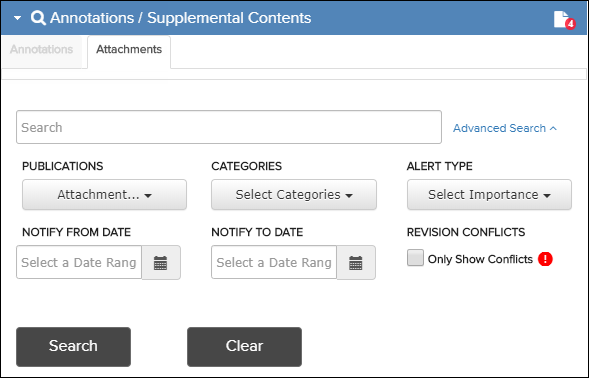
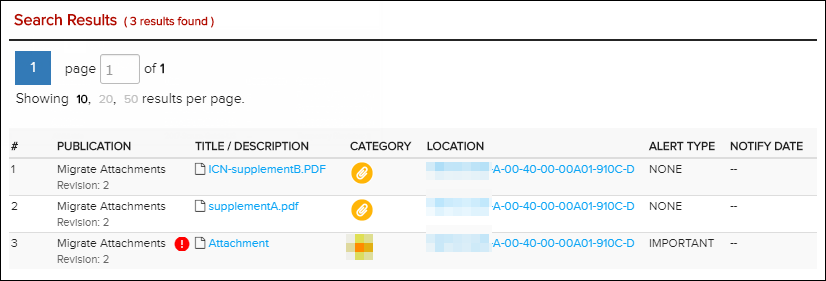

The Attachments search dialog allows searching several different
categories of attachments, such as supplements and temporary revisions. You can
reset this form by clicking the  Reset button.
Reset button.
Note: As an alternative, you can also search
textual content of attachments using Full Text Search. Refer to Full Text Search Options.
If your administrator has enabled the Can access current revisions only
privilege, publications that are not current do not appear in the search results.
You must update to the latest revision before these publications are available.
Refer to Library Pane for more information.
Note: When
you perform an attachments search on a symbolic link publication, the
information displayed is for the original (target)
publication.
To search attachments, do these steps:
-
Click the
 header below the Table of
Content pane.
The Annotations / Supplemental Contents search dialog search pane expands.
header below the Table of
Content pane.
The Annotations / Supplemental Contents search dialog search pane expands. -
Click the Attachments tab.
The Attachments search dialog appears.

Attachments Search Dialog
Note: If there are attachments, a supplemental icon may appear to the right of
the Annotations / Supplemental Contents header title.
Refer to View Attachment.
supplemental icon may appear to the right of
the Annotations / Supplemental Contents header title.
Refer to View Attachment. -
Click the
 Search button.
The Search Results pane appears below the Attachments search form.
Search button.
The Search Results pane appears below the Attachments search form.
Attachments Search Results
The corresponding publication and document are also selected and display in the Library and Table of Content panes respectively.
If you have all permissions enabled for Can Upload Supplement, you may see
 "Attachment is in conflict" icons. An attachment with this icon was made in a
previous revision and it is possible that it contradicts the updated information in
the latest revision. Refer to Migrate Attachments.
"Attachment is in conflict" icons. An attachment with this icon was made in a
previous revision and it is possible that it contradicts the updated information in
the latest revision. Refer to Migrate Attachments.
You can use the Attachments pane to manage attachments. Refer to Attachments Pane.